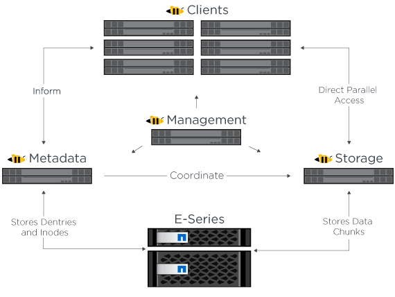

请求文档变更
请求文档变更 在 GitHub 上编辑
在 GitHub 上编辑 提供者指南
提供者指南架构概述
提供者
NetApp解决方案 上的BeeGFS包括用于确定支持经验证的工作负载所需的特定设备、布线和配置的架构设计注意事项。
构建块架构
根据存储要求、可以使用不同的方式部署和扩展BeeGFS文件系统。例如、以大量小文件为主要特征的使用情形将受益于额外的元数据性能和容量、而大文件较少的使用情形则可能有利于提高实际文件内容的存储容量和性能。这些多种注意事项会影响并行文件系统部署的不同维度、从而增加了文件系统设计和部署的复杂性。
为了应对这些挑战、NetApp设计了一个标准的构建块架构、用于横向扩展其中的每个方面。通常、BeeGFS组件部署在以下三种配置文件之一中：
-
一个基础组件、包括BeeGFS管理、元数据和存储服务
-
BeeGFS元数据加上存储组件
-
仅供BeeGFS存储使用的组件
这三个选项之间的唯一硬件更改是使用较小的驱动器来获取BeeGFS元数据。否则、所有配置更改将通过软件应用。借助Ansible作为部署引擎、为特定组件设置所需的配置文件可以使配置任务变得简单明了。
有关更多详细信息、请参见 hardware design。
文件系统服务
BeeGFS文件系统包括以下主要服务：
-
*管理服务。*注册并监控所有其他服务。
-
*存储服务。*存储称为数据区块文件的分布式用户文件内容。
-
*元数据服务。*跟踪文件系统布局、目录、文件属性等。
-
*客户端服务。*挂载文件系统以访问存储的数据。
下图显示了NetApp E系列系统中使用的BeeGFS解决方案 组件和关系。

作为一个并行文件系统、BeeGFS会将其文件条带化到多个服务器节点上、以最大限度地提高读/写性能和可扩展性。服务器节点协同工作、可提供一个文件系统、其他服务器节点(通常称为_clients_）可以同时挂载和访问该文件系统。这些客户端可以查看和使用分布式文件系统、类似于NTFS、XFS或ext4等本地文件系统。
这四项主要服务在广泛支持的Linux分发版上运行、并通过任何支持TCP/IP或RDMA的网络进行通信、包括InfiniBand (IB)、OMNI-Path (OPA)和基于融合以太网的RDMA (RoCE)。BeeGFS服务器服务(管理、存储和元数据)是用户空间守护进程、而客户端是原生 内核模块(无修补)。所有组件均可在不重新启动的情况下安装或更新、您可以在同一节点上运行任何服务组合。
已验证节点
NetApp解决方案 上的BeeGFS包括以下经验证的节点：NetApp EF600存储系统(块节点)和联想ThinkSystem SR665服务器(文件节点)。
块节点：EF600存储系统
NetApp EF600全闪存阵列可提供一致、近乎实时的数据访问、同时支持任意数量的工作负载。为了快速、持续地向AI和HPC应用程序馈送数据、EF600存储系统在一个机箱中提供高达200万个缓存读取IOPS、低于100微秒的响应时间以及42 GBps顺序读取带宽。
文件节点：Lenovo ThinkSystem SR665服务器
SR665是一款采用PCIe 4.0的双插槽2U服务器。如果配置为满足此解决方案 的要求、则它可以提供充足的性能、以便在与直连E系列节点提供的吞吐量和IOPS相当的配置中运行BeeGFS文件服务。
有关联想SR665的详细信息、请参见 "联想的网站"。
经验证的硬件设计
该解决方案的组件(如下图所示)使用两个双插槽PCIe 4.0服务器作为BeeGFS文件层、并使用两个EF600存储系统作为块层。


|
由于每个组件都包含两个BeeGFS文件节点、因此要在故障转移集群中建立仲裁、至少需要两个组件。虽然您可以配置双节点集群、但此配置具有一些限制、可能会阻止成功进行故障转移。如果您需要双节点集群、则可以将第三个设备作为Tiebreaker (但是、此站点不会介绍此设计)。 |
每个组件都通过两层硬件设计提供高可用性、这种设计可分隔文件层和块层的故障域。每个层都可以独立进行故障转移、从而提高故障恢复能力并降低级联故障的风险。将HDR InfiniBand与NVMeOF结合使用可在文件和块节点之间提供高吞吐量和最低延迟、并提供完全冗余和足够的链路超额预订、以避免分散设计成为瓶颈、即使系统部分降级也是如此。
NetApp解决方案 上的BeeGFS可跨部署中的所有组件运行。部署的第一个组件必须运行BeeGFS管理、元数据和存储服务(称为基础组件)。所有后续组件均通过软件配置为运行BeeGFS元数据和存储服务、或者仅运行存储服务。由于每个组件都具有不同的配置配置文件、因此可以使用相同的底层硬件平台和组件设计扩展文件系统元数据或存储容量和性能。
一个独立的Linux HA集群最多可组合五个组件、从而确保每个集群资源管理器(Pacemaker)有合理数量的资源、并降低保持集群成员同步所需的消息传送开销(Corosync)。建议每个集群至少有两个组件、以便有足够的成员建立仲裁。将这些独立BeeGFS HA集群中的一个或多个组合在一起、以创建一个BeeGFS文件系统(如下图所示)、此文件系统可作为一个存储命名空间供客户端访问。

尽管每个机架的组件数量最终取决于给定站点的电源和散热要求、 解决方案 经过专门设计、可在一个42U机架中部署多达五个组件、同时仍可为用于存储/数据网络的两个1U InfiniBand交换机提供空间。每个构建块需要八个IB端口(每个交换机四个用于实现冗余)、因此五个构建块会在一个40端口HDR InfiniBand交换机(如NVIDIA QM8700)上保留一半的端口、以便实施ft-tree或类似的非阻塞拓扑。此配置可确保存储或计算/GPU机架的数量可以纵向扩展、而不会出现网络瓶颈。或者、可以根据存储网络结构供应商的建议使用超额预订的存储网络结构。
下图显示了一个80节点的ft-tree拓扑。

通过使用Ansible作为部署引擎在NetApp上部署BeeGFS、管理员可以使用现代基础架构作为代码实践来维护整个环境。这样可以极大地简化原本复杂的系统、使管理员可以在一个位置定义和调整所有配置、然后确保无论环境扩展多大、都能始终如一地应用。可从获取BeeGFS集合 "Ansible Galax河" 和 "NetApp的E系列GitHub"。